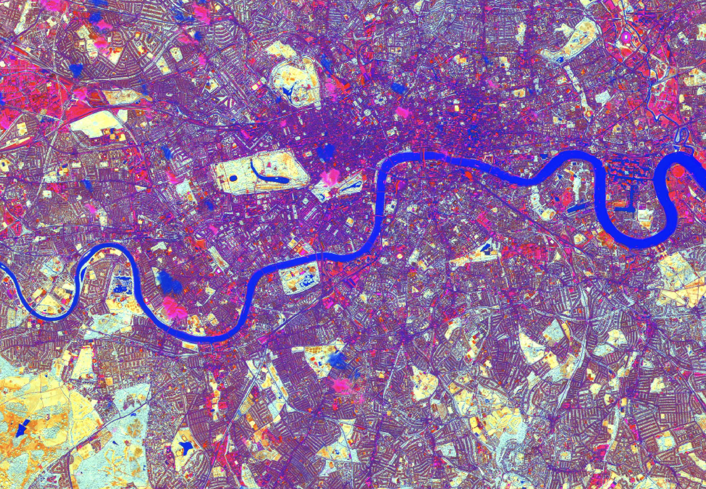
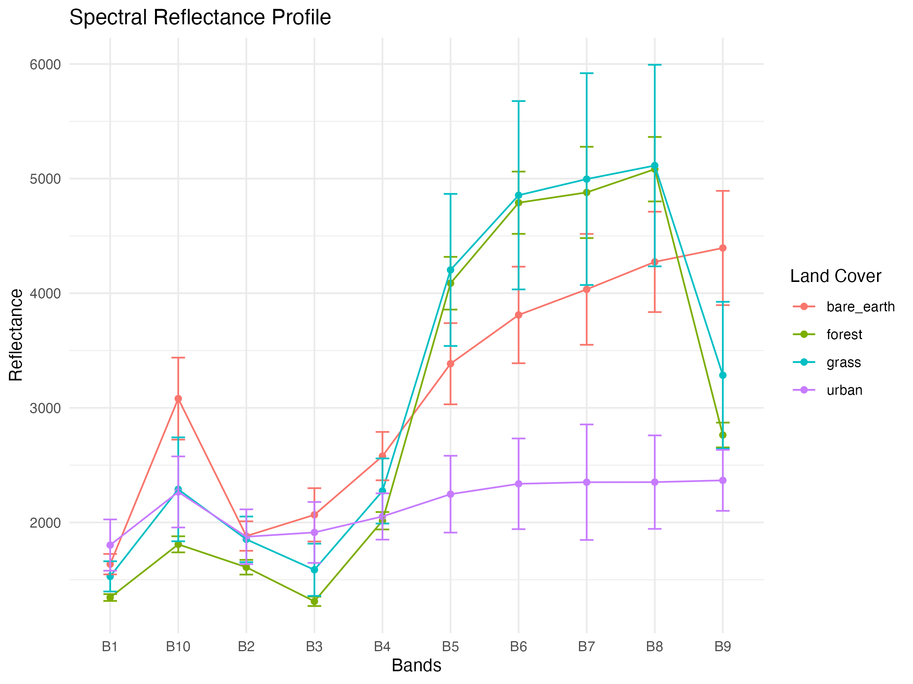
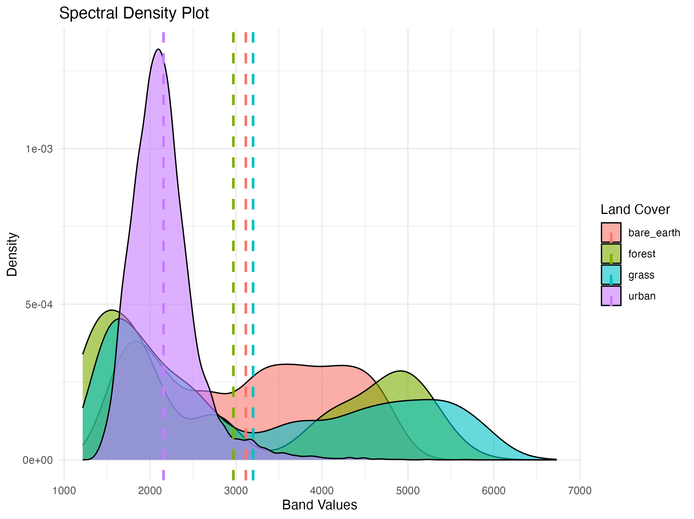

This week introduced the physical principles that underpin all remotely sensed data. Remote sensing is fundamentally the measurement of electromagnetic radiation (EMR) that has interacted with the Earth’s surface — either passively (detecting reflected solar energy or emitted thermal energy) or actively (transmitting a signal and measuring its return, as in Synthetic Aperture Radar). The distinction matters operationally: passive optical sensors like Sentinel-2’s Multi-Spectral Instrument (MSI) are constrained by solar illumination and cloud cover, while active sensors like Sentinel-1’s C-band SAR can acquire data at night and through cloud — a critical advantage in persistently cloudy regions like the UK (Tempfli et al. 2009).
EMR does not travel unaltered from the sun to the sensor. As it passes through the atmosphere, it undergoes scattering (redirection by particles), absorption (conversion to heat by atmospheric gases), and transmission. The type of scattering depends on the ratio of particle size to wavelength: Rayleigh scattering (particles much smaller than the wavelength) preferentially affects shorter wavelengths, which is why the sky appears blue — blue light (~450 nm) scatters roughly 5.5 times more than red light (~700 nm) (Jensen 2015). At the surface, incident radiation is partitioned into reflected, absorbed, and transmitted components, with the proportions varying by material and wavelength — this wavelength-dependent reflectance is what produces the spectral signature that allows different surface types to be distinguished.
Remotely sensed data is characterised by four resolutions, each involving trade-offs. Spatial resolution (pixel size) determines the smallest feature detectable — Sentinel-2 provides 10 m in VNIR bands but only 20 m in SWIR and 60 m in atmospheric bands. Spectral resolution describes the number and width of wavelength bands recorded: Sentinel-2’s 13 bands span from coastal aerosol (443 nm) to SWIR (2190 nm), including three red-edge bands (B5, B6, B7) specifically designed to capture the steep reflectance increase at the vegetation red-edge (~700–750 nm). Temporal resolution is the revisit period — 5 days for the Sentinel-2A/2B constellation. Radiometric resolution determines the sensor’s sensitivity to differences in reflected energy: Sentinel-2’s 12-bit quantisation provides 4096 discrete brightness levels per band, compared to Landsat 5 TM’s 8-bit (256 levels), enabling finer discrimination of subtle spectral differences (Phiri et al. 2020).
Application
In the practical, I worked with a Sentinel-2 L2A (Bottom of Atmosphere) scene of London acquired on 2 May 2025 using the SNAP toolbox and R. L2A products have already undergone atmospheric correction via the Sen2Cor processor, converting top-of-atmosphere radiance to surface reflectance — removing the atmospheric scattering and absorption effects discussed above. The first step was generating a true colour composite by mapping B4 (Red), B3 (Green), and B2 (Blue) to the RGB colour channels:
Figure 2.1: True colour composite of London generated in SNAP using Sentinel-2 L2A B4/B3/B2. The Thames, Hyde Park, and the dense urban fabric of central London are clearly resolved at 10 m spatial resolution. The image demonstrates the high radiometric quality of L2A surface reflectance data — contrast between vegetated parks and built surfaces is immediately apparent without any manual histogram stretching.
I then computed a Tasseled Cap Transformation (TCT), originally developed by Kauth and Thomas (1976) for Landsat MSS data to compress multispectral information into physically interpretable components. The transformation applies sensor-specific coefficients to produce three orthogonal axes: Brightness (aligned with high-albedo surfaces — bare soil, concrete, rooftops), Greenness (aligned with photosynthetically active vegetation), and Wetness (aligned with moisture content in soil, vegetation, and water bodies). Before computing TCT, all bands had to be resampled to a uniform 20 m resolution using SNAP’s Resampling tool, because the required input bands span two native resolutions (B2, B3, B4, B8 at 10 m; B11, B12 at 20 m). The Brightness component, for example, was calculated as:
Code
# Tasseled Cap Brightness formula applied via SNAP Band Maths# Coefficients are sensor-specific — these are for Sentinel-2 MSIBrightness = (0.3037* B2) + (0.2793* B3) + (0.4743* B4) + (0.5585* B8) + (0.5082* B11) + (0.1863* B12)
The three components were displayed as an RGB composite (R: Brightness, G: Greenness, B: Wetness):

Figure 2.2: Tasseled Cap Transformation RGB composite. The Thames appears bright blue (high Wetness, low Brightness and Greenness), urban areas are purple/magenta (high Brightness dominating over Greenness), and parks display as yellow-green patches (high Greenness). This visualisation compresses six spectral bands into three physically meaningful dimensions — a form of guided dimensionality reduction that, unlike PCA, produces components with consistent, interpretable physical meanings across scenes.
To quantitatively compare spectral characteristics across land cover types, I created vector polygons in SNAP for four categories — urban, grass, forest, and bare earth — exported them as shapefiles alongside the resampled imagery (GeoTIFF), and performed the analysis in R using the terra package. The extraction function below abstracts the workflow of pulling pixel values from a raster stack for a given polygon and reshaping them into tidy format:
Code
# Function to extract pixel values per land cover polygon and reshape for ggplotband_fun <-function(sensor, landcover) { col_sensor <-deparse(substitute(sensor)) col_land <-deparse(substitute(landcover)) terra::extract(sensor, landcover, progress = F) %>%as_tibble() %>%pivot_longer(cols =2:ncol(.),names_to ="bands",values_to ="band_values") %>%add_column(sensor = col_sensor) %>%add_column(land = col_land)}

Figure 2.3: Spectral reflectance profiles (mean ± 1 SD) for four land cover types. Vegetation classes (grass and forest) show the characteristic “red-edge” — low reflectance in visible bands (absorption by chlorophyll) followed by a sharp increase in NIR bands (strong scattering by mesophyll cell structure). Urban surfaces exhibit a relatively flat, low-amplitude profile across all bands, consistent with the spectrally mixed nature of built-up pixels at 20 m resolution.

Figure 2.4: Spectral density plot showing the distribution of all pixel reflectance values pooled across bands. Urban pixels cluster tightly at lower values with a narrow distribution, while vegetation and bare earth exhibit broader, higher-value distributions driven by their strong NIR response. The dashed vertical lines indicate overall mean reflectance per class.
The spectral profiles in Figure 2.3 reveal patterns consistent with the physical principles discussed in the lecture. The vegetation red-edge — the steep reflectance increase between B4 (Red, ~665 nm) and B8 (NIR, ~842 nm) — is driven by the contrast between strong chlorophyll absorption in the red and strong scattering by the spongy mesophyll layer in the NIR (Jensen 2015). Bare earth shows the highest reflectance in visible bands (B2–B4), which is expected for exposed mineral surfaces with no vegetative cover to absorb red light. Urban pixels, despite representing built surfaces, show surprisingly moderate reflectance with high variance — likely because the 20 m pixel size captures sub-pixel mixtures of rooftops, roads, vegetation, and shadow, creating a mixed pixel problem that is well-documented in the urban remote sensing literature (Phiri et al. 2020).
These spectral extraction techniques have direct practical applications. Labib and Harris (2018) evaluated Sentinel-2 and Landsat-8 for mapping urban green infrastructure using Object-Based Image Analysis (OBIA) in Dhaka, finding that Sentinel-2’s finer 10 m resolution achieved higher accuracy (71.24%) than Landsat-8 at extracting fragmented green patches in dense urban fabrics — precisely the kind of resolution advantage visible when comparing my 10 m true colour composite (Figure 2.1) to the 20 m resampled TCT output (Figure 2.2). Ni, Liu, and Wang (2024) extended this further by using Landsat-derived spectral indices (NDVI) to quantify the cooling effects of urban green spaces on the Urban Heat Island (UHI) effect in Nagoya, demonstrating that UGS exerts a measurable cooling influence up to 300 m from its edge, with the strongest effect within 200 m. Their work shows how the TCT components we computed — particularly Greenness and Brightness — are not merely visualisation tools but inputs to quantitative environmental models that directly inform nature-based urban climate mitigation strategies aligned with SDG 11 (Sustainable Cities and Communities).
Reflection
The most significant conceptual shift this week was recognising that remotely sensed data is not simply “imagery” but a structured measurement of physical interactions between electromagnetic radiation and matter. Every pixel value in our Sentinel-2 scene encodes information about the surface’s reflectance properties at a specific wavelength, after atmospheric correction has (imperfectly) removed the confounding effects of scattering and absorption. This framing transforms the data from something visual into something quantitative and analytically tractable — the spectral profiles in Figure 2.3 are not aesthetic choices but measurements of physical properties.
The practical highlighted the complementary strengths of different tools. SNAP excels at interactive exploration — visually comparing band combinations, adjusting contrast stretches, drawing ROI polygons — but becomes cumbersome for reproducible quantitative analysis. R’s terra package, by contrast, enables scripted, repeatable extraction and statistical comparison of spectral values across land cover types, but lacks SNAP’s visual immediacy for image interpretation. The most effective workflow combined both: SNAP for preprocessing (resampling, band maths, polygon creation, export) and R for analysis and visualisation.
One limitation I noticed is the subjectivity of training polygon placement. My “forest” polygon likely included a mix of canopy and undergrowth, and my “urban” polygon certainly contained sub-pixel vegetation — which explains the high variance in the urban spectral profile. This foreshadows a fundamental challenge in supervised classification that the module will address later: the quality of any derived product is bounded by the quality of the reference data, not the sophistication of the algorithm. Going forward, I am curious to explore how Google Earth Engine might streamline these preprocessing workflows by operating on cloud-hosted data collections without the need for local downloads, and how the spectral analysis skills from this week will underpin the classification methods introduced in later weeks.
Jensen, John R. 2015. Introductory Digital Image Processing: A Remote Sensing Perspective. 4th ed. Prentice Hall.
Kauth, R. J., and G. S. Thomas. 1976. “The Tasselled Cap – a Graphic Description of the Spectral-Temporal Development of Agricultural Crops as Seen by LANDSAT.” In Proceedings of the Symposium on Machine Processing of Remotely Sensed Data, 4B-41-4B-51. West Lafayette, Indiana: Purdue University.
Labib, S. M., and Angela Harris. 2018. “The Potentials of Sentinel-2 and LandSat-8 Data in Green Infrastructure Extraction, Using Object Based Image Analysis (OBIA) Method.”European Journal of Remote Sensing 51 (1): 231–40. https://doi.org/10.1080/22797254.2017.1419441.
Ni, Xuhui, Yanqing Liu, and Haobin Wang. 2024. “Measuring the Cooling Effects of Green Cover on Urban Heat Island Effects Using Landsat Satellite Imagery.”International Journal of Digital Earth 17 (1): 2358867. https://doi.org/10.1080/17538947.2024.2358867.
Phiri, Darius, Matamyo Simwanda, Serajis Salekin, Vincent R. Nyirenda, Yuji Murayama, and Manjula Ranagalage. 2020. “Sentinel-2 Data for Land Cover/Use Mapping: A Review.”Remote Sensing 12 (14): 2291. https://doi.org/10.3390/rs12142291.
Tempfli, K., G. C. Huurneman, W. H. Bakker, L. L. F. Janssen, W. J. Feringa, A. S. M. Gieske, K. A. Grabmaier, et al. 2009. Principles of Remote Sensing: An Introductory Textbook. Enschede, The Netherlands: International Institute for Geo-Information Science; Earth Observation (ITC).